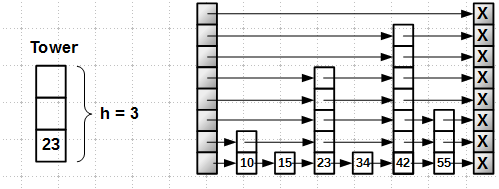

Summary
We will implement a high-performance parallel hash table using lock-free linked lists. We'll be working with x86 and may later deploy onto AWS or latedays.
Background
A hash tables is useful for constant look-up, insertion, deletions, etc.
The Challenge
This problem is challenging because lock-free data structures are tricky to implement. For a lock-free skip list, there are different levels of skipping which adds another layer of computation. A lot of things can go wrong, especially with different scenarios of concurrency. We hope to learn how to implement a lock-free data structure, and to get practice debugging concurrent issues.
Resources
We will compile locally on an x86 system, given the fact that we have the compare_and_swap primitives. We have a sequential starter code, a lot of research which has been done on lock-free skip lists, and access to open-source implementation in the Java API (if we so desire). Ideally, we will start from stratch and work from there. One helpful paper we found is here.
Goals and Deliverables
Hope to Achieve:
A full implementation of a skip-list with multiple reader, multiple writer. Depending on what trouble we run into, we may have to implement a less robust solution. A distributed implementation of an ordered hashtable using the lock-free skiplist. Fault-tolerant and coherent, not necessarily availible.Platform Choice
We will work on x86 and implement our structure in C. Just cus.
Schedule
4/4 (Monday): Start research and finish sequential implementation
4/11 (Monday): Begin lock-free data structure, finish by end of week
4/15 (Friday): Project Checkpoint 1 due
4/18 (Monday): Debug lock-free data structure, possibly re-implement sections if needed, a lot of testing!
4/25 (Monday): Optimize and further changes if necessary, hopefully be able to start distributed portion
5/2 (Monday): Clean up code, test and optimize part II
5/4 (Wednesday): Start writeup and prepare outline of project presentation
5/9 (Monday): Project presentation + Final writeup
Having trouble with Pages? Check out our documentation or contact support and we’ll help you sort it out.